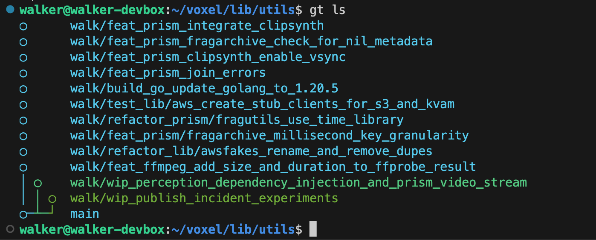
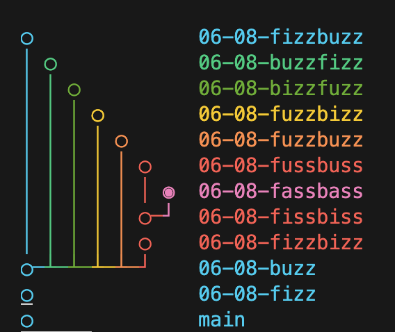
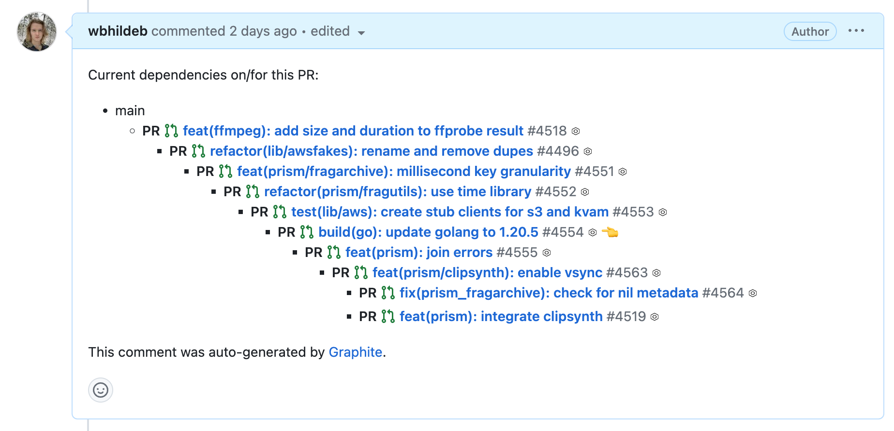

Digesting a giant pull request can take a ton of time to contextualize what you're reviewing - especially if you have to context-switch mid-review.
Feeling blocked because you want to work on a feature, but are waiting for your pull request to be merged into main also sucks.
Often we'll end up submitting some feature_1 that we want pushed through to main, so we can branch off of main again and keep working some on feature_2 that is dependent on the earlier code. We're blocked, and so maybe we get a rushed review, especially if its a large chunk of code that no one wants to digest.
And that's the problem. But that's not how code review should be.
The solution is somewhat obvious, and I'm sure some of you do this already. Make a branch off of feature_1_branch, call it something clever like feature_2_branch and submit a pull request to merge feature_2 into feature_1. Cool, you're un-blocked.
Except that's not the solution! I mean it is, but you still have giant pull requests and everyone that has to review your code still hates you. In an effort to be loved, you make them bite-sized. Cute little code snippets that are easy to review. And now your feature is composed of 30 branches. Then when you try to implement the feedback from those code reviews, you're find youself in rebasing/merging hell. El Problema!
A command line tool gt which wraps git. Also, a website for PRs like GitHub - but that part is optional (I don't use it).
It introduces the concept of stacks and adds utilities for them. A stack is a tree of dependent branches.
If your feature requires 30 small changes, then each of those changes will be its own branch, and you can structure those changes as a tree (often just a straight line of dependencies).

Above is a list of my branches which are tracked by graphite. I have one main stack with many branches, and two other experimental stacks which are just a single branch. When I develop a new part of my feature, I add it onto the top of the main stack. If I start some other project, I'll start a new stack off of main.
The difference between this and El Problema (rebase hell), is that if you make a change somewhere in the middle of your stack, Graphite will restack all of the branches which are upstack of that change. Essentially, it does all of that tedious rebasing for you, propagating changes upwards through the stack.
So how does Graphite change how you code and develop features? Well you'll find it much easier if you follow these guidelines.
Stop merging! You're a rebaser now. Rebasing is destructive but it treats commits as a patch onto some other commit. So instead of bringing in more and more changes from other sources, your commit diff stays the same as long as you don't run into any conflicts.
Stop rebasing! Let Graphite handle all of that for you. It's helpful to understand the magic that Graphite is performing (especially if you mess something up), so learn a bit about rebasing if you haven't used it before.
Make small, digestible commits! Easy to review means easy to merge.
One commit per branch! Amend and squash are your friends. This may seem odd, but when you rebase/restack (which happens a lot when using Graphite) you may need to deal with some merge conflicts. The rebasing essentially patches each commit on top of each other, so the fewer commits which have conflicts, the less you'll have to deal with merge issues.
Tidy up! Keep your git status clean, more navigating branches and more rebasing means you're not going to be able to hold on to a bunch of uncommitted file changes. Stash if you need to, or better yet commit them!
Code now, branch later! With Graphite, it is very easy to code on some base branch - like main, or the top of your stack. When you're ready to commit, you can then take all of those changes and commit them onto a new branch once you're ready to do so. gt branch create --all --message "feat: some small change" will take all of your changes, create and name a new branch, commit the changes with the given message, stack the new branch onto your current one, and then checkout the new branch.
Using graphite in your repo will prompt you to specify the trunk branch and ask if you want to track current branches. Make sure to set the correct trunk branch (usually main or master) and specify that you'd like to track branches.
Setup tab completion with gt completion for bash/zsh, or gt fish for fish.
Configure the auto-naming of branches with:
gt user branch-prefix --set [prefix] or gt user branch-prefix --reset to set the prefixgt user branch-date to toggle whether to include date in branch namesgt user --help will show more configuration options
Graphite commands are nicely organized by the scope on which they operate. Namely,
gt {stack, upstack, downstack}gt branchgt commitgt repogt logThe stack-based scopes have mostly the same commands, with some exceptions, but:
stack affects the current branch, its ancestors and its descendants. alias gt supstack affects the current branch and descendants. alias gt usdownstack affects the current branch and ancestors. alias gt dsgt {stack,upstack,downstack} submit: Create linked pull requests for all of the branches in the specified scope
gt {stack,upstack,downstack} restack: Ensure each branch in the scope is based on its parent, rebasing if necessary
gt upstack onto [branch]: Rebase the current branch and its ancestors onto the specified branch
The branch scope is used a lot. For submitting a pull request, navigation, editing your stack, etc.
gt branch submit: Create or update a GitHub pull request for the branch
gt branch (un)track [branch]: Enable/disable Graphite tracking the current or specified branch
gt branch create: Create a new branch stacked on top of the current branch and commit staged changes.
gt branch {up,down} [steps]: Move up or down within the stack
gt branch {top,t,bottom,b}: Move to top or bottom branch of the stack
gt branch checkout [branch]: Checkout a branch, not specifying a branch will give interactive view
gt commit create: Create a new commit and restack upstack branches
gt commit amend: Amend the most recent commit and restack upstack branches
gt repo init: Create or regenerate a .graphite_repo_config file
gt repo sync: Pull the trunk branch and prune merged branches
gt log: Pretty verbose log with commits, ancestry and pull request status for each branch
gt log short, gt ls: More concise log which shows branches and their ancestry
gt log long, gt ll: Way too much info for my small brain
The Graphite Docs have a nice quick start guide to get you to started.
Follow the Creating the first branch in a stack section and stop before Getting started with the Graphite dashboard to get the gist of basic Graphite usage.
Play around with the stack of branches you made. Here are some things to try:
gt upstack onto to rebase your first stack onto the newest onegt commit amend -an to amend a commit mid-stack and see changes propagate upstackgt downstack edit at the top of a stack to edit the order of branchesgt branch foldgt branch squashgt ls
Once you feel ready, you may want to try using gt branch split on one of your development branches. This will allow you to split the branch into multiple dependent branches, either by hunk or by commit.
You'll notice after submitting a stack, that Graphite will generate a helpful comment for you that describes your stack - with links to each pull request.

This is great for navigating your pull requests as well as those that you're reviewing.
When submitting a pull request it is important that each PR represents an atomic change which will not break trunk if the descendant branches are not merged in.
That being said, depending on the contents of your PR, it's advisable to wait until you have a feature's-worth of PRs approved before you start merging so that if you abandon some code it is not left to rot for eternity in the trunk branch.
Once you're ready to merge some branches into main, there are two main strategies, top-down and bottom-up.
In the top-down approach, you merge the top-most ancestor branch into trunk, then repo sync -rf to update locally and submit again, repeating until everything is merged in.
Alternatively, you can merge bottom-up, meaning you take the descendant branches and merge them into their ancestors until all of the branches are squashed into the top-level ancestor branch and you can merge that single change into main. This be accomplished via GitHub or by using gt branch fold locally. Just make sure that the branches you merge into the top-level ancestor are all approved, since the branches in your stack are not going to have the same branch-protection rules as the trunk.
Do whatever works for you!